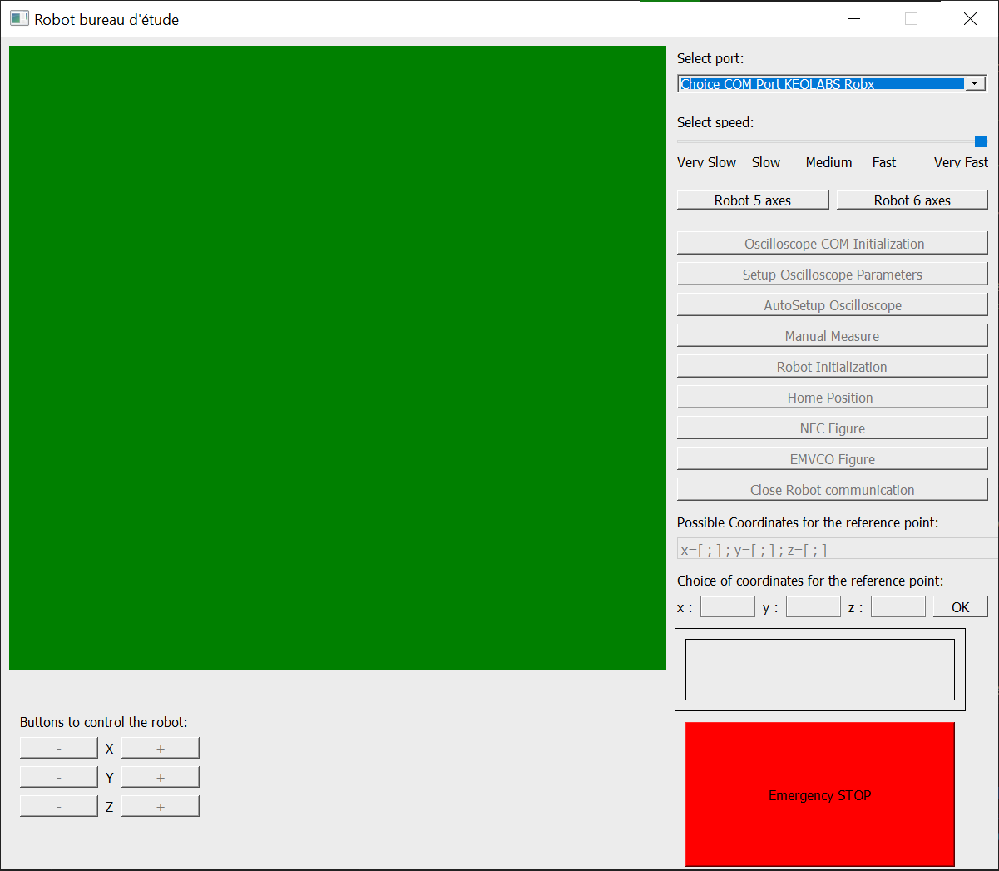

Outil pour piloter les bras robot
Crédits
développé par :
- Lisa Duterte, Romain Derrien, Clement Rouvier et Elsa Della Valle (BE 22-23)
- Hamid AJOUAOU, Roméo BOTULI-BUNDOL, Samuel DECAY et baptiste Saby (BE 23-24)
Instalation
L'outil requiert :
- python 3.10 (développé sous 3.10.11)
- les packages :
- PyQt5
- pyserial
- PyVISA
- pywin32
- les logiciels :
- RobX_1.28.20.1027.exe (logiciel de keolabs pour les librairies)
- activedsoinstaller.exe
- IviSharedComponents_300.exe
- lecroyscope.3.2.9.0-x64.msi
visa530runtime.exe
wavestudioinstaller64_8.7.0.5.exe
pour le 5 axes (driver serial):
- UC232A_Windows_Setup.exe
pour le 6 axes (logiciels de denso pour controller leur robot, requiert une license):
- WINCAPS III v3.64.2 ou ultérieur
- ORiN2
De plus, l'outil requiert une ip statique sur le port du PC.
Pour cela :
- chercher "panneau de controle" dans windows
- aller dans "réseau et internet"
- "Réseau et centre de partage"
- "changer les option d'adaptateur"
- faire clique droit sur "Ethernet"
- cliquer sur "propriétés"
- cliquer sur "Protocol Internet Version 4 (TCP/IPv4)"
- cliquer sur "propriétés"
- selectionner "utiliser l'addresse ip suivante"
- entrer "192.168.30.33" dans le champ "addresse ip" et "255.255.255.0" dans le champ "masque sous réseau"
Utilisation
Pour le robot DENSO 6 axes spécificquement, veuillez lancer wincaps III et se log en mode développer au préalable
Pour utiliser l'outil :
- brancher le robot allumé et l'oscilloscpe à l'ordinateur
lancer le script MainWindow.py (se déplacer dans le dossier et faire ./MainWindow.py)
dans le cas du 5 axes :
- ouvrir le menu déroulant et selectionner le port comm correspondant au robot
- cliquer sur 5 axes
dans le cas du 6 axes, cliquer sur 6 axes
initialiser l'oscilloscope avec les boutons "Oscilloscope COM Initialization" et "Setup Oscilloscope Parameters"
initialiser le robot avec le bouton "Robot Initialisation"

Le robot DENSO est pilotable manuellement via le logiciel de keolabs, pour l'utiliser, ouvrir un invite de commande dans le dossier "C:/Program Files(x86)/KEOLABS/RobX/Bin" et entrer la commande "Rob6xManager P S192.168.30.34 DENSO VS-AV6"
Axes de développement
- ajouter une fonction qui prendrait 3 points (définisant un pavé) et 3 instervales (pour avoir le nombre de points par rangées) pour définir un set de points
- par exemple, ((0, 0, 0), (10, 10, 0), (0, 0, 10), 1, 1, 1) définierait un cube de 10cm sur chaque axe avec un point de mesure tout les cm.
- nettoyer le code de main window
- implémenter un traitement des données collectées lors de l'aquisition